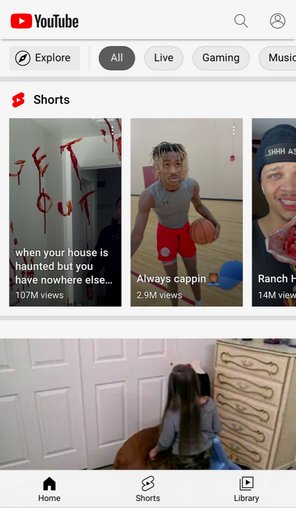

White Space and Clean Design
This gorgous portfolio's home page demonstrates a good use of white space. You're eyes are immediately drawn to the bright picture at the bottom, with nothing to distract you. This is very important as what we want to be focusing on when on this page is who we came here for: Kabel.
Repetition
Repetition is seen on this page by the nice orange circles leading your eye down the page. Your eyes never get tired or bored as it follows the line down to the eventual endpoint (not shown in the shot). And while the circles look the same, they introduce new and relavent information to the page.
Hick's Law
Hick's Law is the more options their are on a page, the longer the user will take to make a decision or find what they are looking for. In YouTube's example, both of these concerns are addressed. First, the page seperates content into video types, whether they be shorts or full length. Then the videos are seperated by genre to better help the user narrow down what to click on in YouTube's vast options.